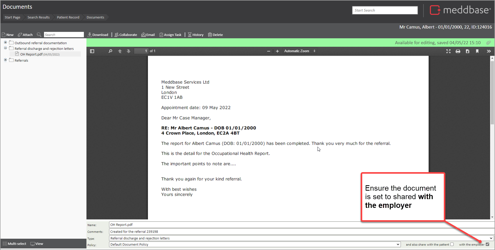
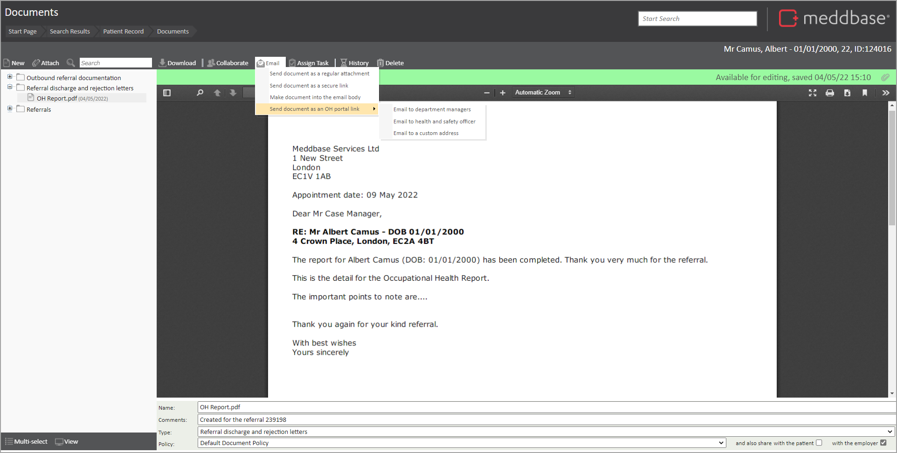
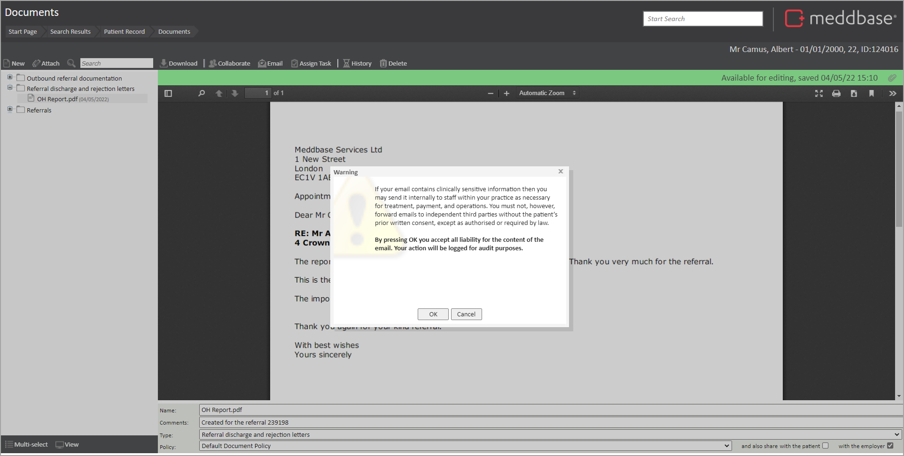
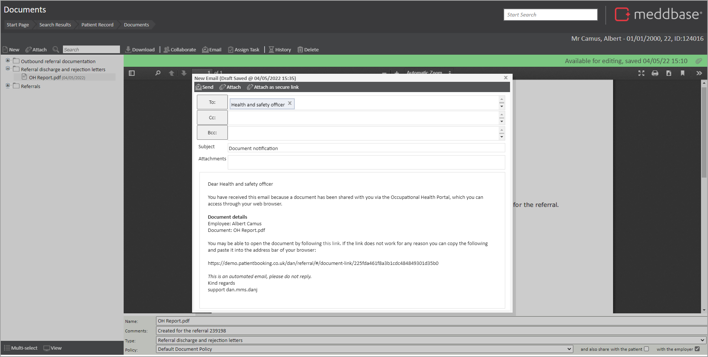
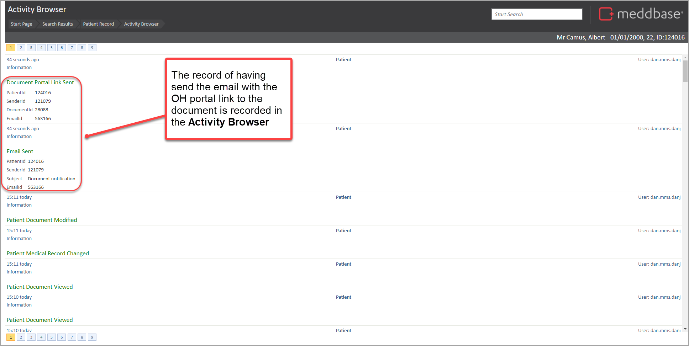
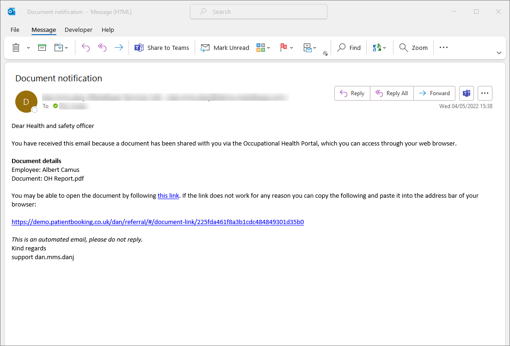
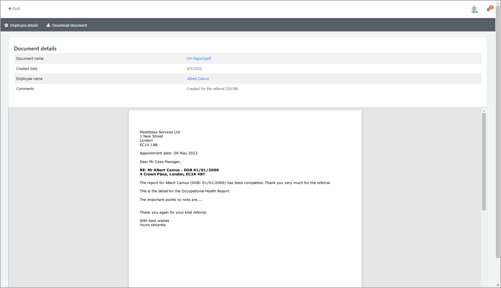
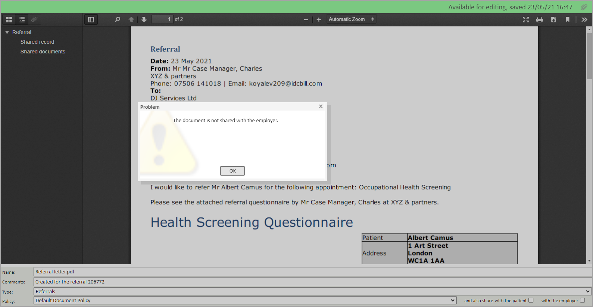
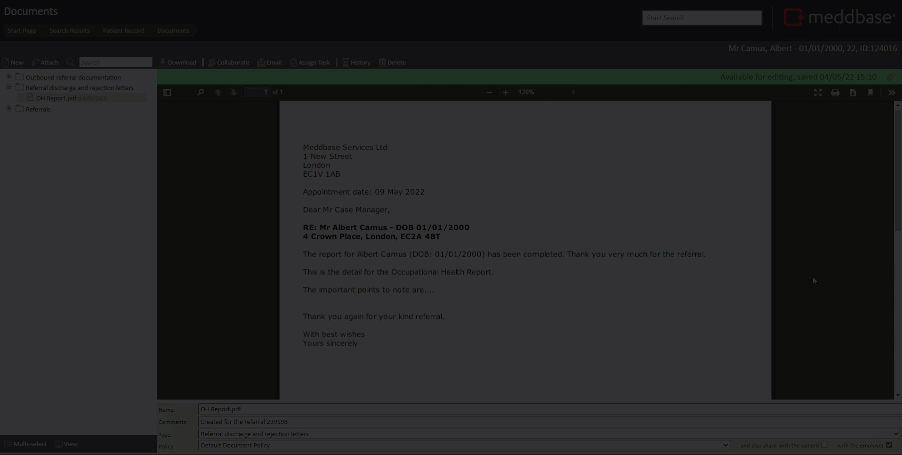

Meddbase enables documents to be shared online with employer contacts to be viewed in the Occupational Health (OH) Portal. In some scenarios, users need to manually notify employer contacts when a document is shared.
To support this, a feature has been developed which enables:
This article outlines:
To see what pre-requisite configuration is required and what needs to be recorded for organisations, patients and contacts, please view the article What setup is needed to enable sending a shared document as an OH portal link?
To do this:
1. From the start page of Meddbase, find and open the patient record.
2. Select Documents within the patient record.
3. Navigate through the document list to select the required document.
4. Ensure the document is set to shared with the Employer.

5. Select Email from the button bar above the document.
6. From the menu list that appears, select Send document as an OH portal link.

At this point, you have 3 options outlined below.
| Menu option | Explanation |
| Email to department managers | Enables distribution of email to departmental managers. These managers need to be setup as managers in the Departments section of the same employer record to which the patient is connected. |
| Email to health and safety officer | Enables distribution of email to an email address connected with the employer. This email needs to be recorded in the Health and safety email field within Company Details for the same employer record to which the patient is connected. |
| Email to a custom address | Enables the user to input a custom email address in the record. |
7. Now, make a choice from the sub-menu (e.g. Email to health and safety officer).
At this point, a warning message appears.

To proceed:
8. In the Warning dialog, click on OK.
9. In the New Email dialog that appears.

As a result:


After receiving the email, the recipient can:
1. Click on the document link.
2. View the document.

Dependent on the link, the email recipient may be required sign in to the OH Portal.
When viewing the document the email recipient can carry out a few further actions summarised below.
| Action | Explanation |
| Click on the link related to the Document name | By doing this, the document is opened in a new browser tab in full view. |
| Click on Download Document | By doing this, the document is downloaded. |
| Click on Employee Details | By doing this, the logged-in OH Portal user navigates back to the Employee details page. |
Where a document has not been shared, the user will still see the Send document as an OH portal link option.
However, if the user selects an option, they are presented with a notification that the document is not shared.

The video below provides a walk-through of what the user would see and can do to email a link to a shared document.
